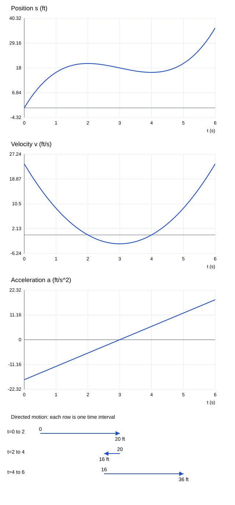

문제 요약
위치 \(s(t)=t^{3} - 9 t^{2} + 24 t\),t≥0이며 t는초,s는ft이다. (a)v(t),(b)v(1),(c)정지 시각,(d)양의 방향 이동 구간,(e)처음6초 총거리,(f)방향을 표시한 운동 도해,(g)a(t),a(1),(h)0≤t≤6에서 s,v,a 그래프,(i)증속·감속 구간을 구하라.

힌트. 변화하는 양과 독립변수의 단위를 정하고 미분한다. 운동은 속도·가속도의 부호,자료는 국소 차분 또는 명시한 회귀로 해석한다.
해설.
\[\text{(a),(b) }v=s\prime=3 \left(t - 4\right) \left(t - 2\right),\quad v(1)=9\ {\rm ft/s}\]
\[\text{(c) }v=0\Rightarrow t=2,4\]
\[\text{(d) }v>0\Rightarrow 0\le t<2\text{ or }t>4\]
\[\text{(e),(f) }(t,s):(0,0)\longrightarrow(2,20)\longrightarrow(4,16)\longrightarrow(6,36)\]
\[D=\left|20-(0)\right|+\left|16-(20)\right|+\left|36-(16)\right|=44\ {\rm ft}\]
\[\text{(g) }a=v\prime=6 \left(t - 3\right),\quad a(1)=-12\ {\rm ft/s^2}\]
(h)아래 세 시간 그래프와 마지막 방향 도해를 참조한다. (i)v와 a의 부호가 같으면 속력 증가,다르면 감소이다. 증속:(2,3)∪(4,∞);감속:(0,2)∪(3,4).
최종 답. \[v=3 \left(t - 4\right) \left(t - 2\right),\quad a=6 \left(t - 3\right),\quad D_{0\to6}=44\] 증속:(2,3)∪(4,∞);감속:(0,2)∪(3,4).
검산·주의점. 방향 전환 시각에서 구간을 나누어 위치 차의 절댓값을 더했다. 속력의 증가·감소는 도함수 va의 부호로 독립 확인했다.
Problem summary
For position \(s(t)=t^{3} - 9 t^{2} + 24 t\),t≥0 with t in seconds and s in feet,find(a)v(t),(b)v(1),(c)rest times,(d)positive-motion intervals,(e)distance in the first6seconds,(f)a directed motion diagram,(g)a(t),a(1),(h)graphs of s,v,a on0≤t≤6,and(i)speeding-up/slowing-down intervals.
Hint. Identify the varying quantity and the independent variable with their units. For motion use velocity and acceleration signs;for data use local differences or an explicitly specified regression.
Solution.
\[\text{(a),(b) }v=s\prime=3 \left(t - 4\right) \left(t - 2\right),\quad v(1)=9\ {\rm ft/s}\]
\[\text{(c) }v=0\Rightarrow t=2,4\]
\[\text{(d) }v>0\Rightarrow 0\le t<2\text{ or }t>4\]
\[\text{(e),(f) }(t,s):(0,0)\longrightarrow(2,20)\longrightarrow(4,16)\longrightarrow(6,36)\]
\[D=\left|20-(0)\right|+\left|16-(20)\right|+\left|36-(16)\right|=44\ {\rm ft}\]
\[\text{(g) }a=v\prime=6 \left(t - 3\right),\quad a(1)=-12\ {\rm ft/s^2}\]
(h)See the three time graphs and final directed-motion diagram. (i)Speed increases when v and a have the same sign,and decreases when they have opposite signs. Speeding up:(2,3)∪(4,∞);slowing down:(0,2)∪(3,4).
Final answer. \[v=3 \left(t - 4\right) \left(t - 2\right),\quad a=6 \left(t - 3\right),\quad D_{0\to6}=44\] Speeding up:(2,3)∪(4,∞);slowing down:(0,2)∪(3,4).
Check and conditions. Split the interval at direction changes and summed absolute position changes. Checked speeding up/slowing down through the sign of va.